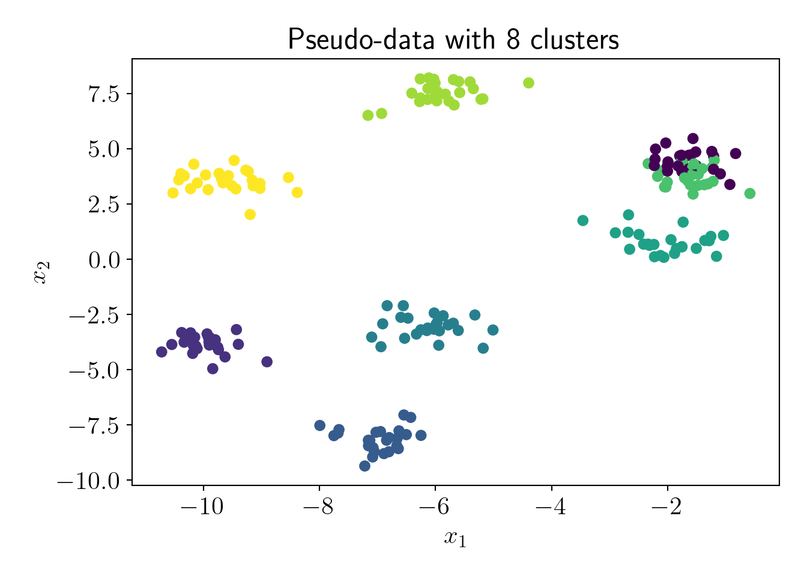

Coresets: 7 Appendix 1: D\(^2\) Sampling
The following algorithm is known as D\(^2\) sampling. It was proposed by Arthur and Vassilvitskii (2007) to improve the initialization of KMeans algorithm. We also leverage the same algorithm in coreset construction of KMeans algorithm (Section 3-4).
Algorithm 1: \(D^2\) sampling
Require: dataset \(X\), number of clusters \(K\).
- Sample \(x\) from \(X\) uniform randomly or preavailable weights. set \(Q_B=\{x\}\)
- for i \(\to\) \(2, 3, ..., K\) do sample \(x\) from \(X\) with probability \(p(x) = \frac{d(x, Q_B)^2}{\sum\limits_{x' \in X}d(x', Q_B)^2}\) and add \(x\) to \(Q_B\).
- return \(Q_B\)
Intuitively, this algorithm tries to select centers which are far away from the already selected centers.
Let us try D\(^2\) sampling on dummy data.
from sklearn.cluster import KMeans
from sklearn.datasets import make_blobs
from scipy.spatial.distance import cdist, pdist
import matplotlib.pyplot as plt
import numpy as np
import pandas as pd
from matplotlib import rc
from matplotlib.animation import FuncAnimation
import warnings
warnings.filterwarnings('ignore')
rc('font', size=16)
rc('text', usetex=True)
def plot_essentials(): # essential code for every plot
hand, labs = plt.gca().get_legend_handles_labels()
if len(hand)>0:
plt.legend(hand, labs);
plt.tight_layout();
plt.show()
plt.close()Genereting pseudo-data,
X, y = make_blobs(n_samples=200, n_features=2, centers=8, random_state=1, cluster_std=0.5)
plt.scatter(X[:,0], X[:,1], c=y);
plt.xlabel('$x_1$');plt.ylabel('$x_2$');
plt.title('Pseudo-data with 8 clusters');
plot_essentials();
Now we visualize the D\(^2\) algorithm,
np.random.seed(0)
K = 8
N = len(X)
first_idx = np.random.choice(N) # Choosing first center randomly
B = [] # Approximate cluster centers
B.append(X[first_idx])
for choice in range(K-1): # Choice of remaining K-1 centers
proba = np.square(cdist(X, np.array(B))).min(axis=1)
norm_proba = proba/np.sum(proba)
idx = np.random.choice(N, p=norm_proba)
B.append(X[idx,:])
B = np.array(B)
# Plotting
fig, ax = plt.subplots();
def update(i):
ax.cla();
ax.scatter(X[:,0], X[:,1], c=y, label='Data points');
ax.scatter(B[:i,0], B[:i,1], c='r', marker='*', s=200, label='Selected centers');
ax.legend();
fig.tight_layout();
plt.close();
anim = FuncAnimation(fig, update, frames=range(8));
rc('animation', html='html5')
anim.save('Dsqr.gif', fps=2)